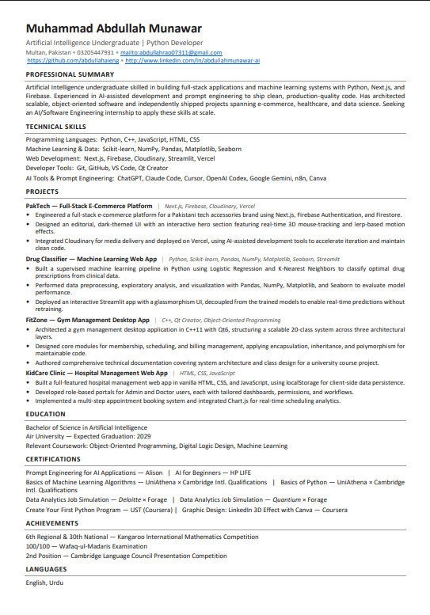

RESUME / 01
Muhammad Abdullah Munawar
Artificial Intelligence Undergraduate | Python Developer
Multan, Pakistan · 03205447931 · abdullahrao07311@gmail.com

PROFESSIONAL SUMMARY
Artificial Intelligence undergraduate skilled in building full-stack applications and machine learning systems with Python, Next.js, and Firebase. Experienced in AI-assisted development and prompt engineering to ship clean, production-quality code. Has architected scalable, object-oriented software and independently shipped projects spanning e-commerce, healthcare, and data science. Seeking an AI/Software Engineering internship to apply these skills at scale.
TECHNICAL SKILLS
Programming: Python, C++, JavaScript, HTML, CSS
ML & Data: Scikit-learn, NumPy, Pandas, Matplotlib, Seaborn
Web: Next.js, Firebase, Cloudinary, Streamlit, Vercel
Tools: Git, GitHub, VS Code, Qt Creator
AI & Prompt Engineering: ChatGPT, Claude Code, Cursor, OpenAI Codex, Google Gemini, n8n, Canva
PROJECTS
PakTech Full-Stack E-Commerce Platform
Next.js, Firebase, Cloudinary, Vercel. Engineered a Pakistani tech accessories platform with Firebase Authentication, Firestore, Cloudinary media delivery, a dark editorial UI, and interactive motion effects.
Drug Classifier Machine Learning Web App
Python, Scikit-learn, Pandas, NumPy, Matplotlib, Seaborn, Streamlit. Built Logistic Regression and K-Nearest Neighbors pipelines for clinical prescription classification, with preprocessing, exploration, visualization, and real-time predictions.
FitZone Gym Management Desktop App
C++, Qt Creator, Object-Oriented Programming. Architected a scalable 20-class Qt6 system across three layers for membership, scheduling, and billing management.
KidCare Clinic Hospital Management Web App
HTML, CSS, JavaScript. Built role-based Admin and Doctor portals, localStorage persistence, multi-step appointment booking, and Chart.js scheduling analytics.
EDUCATION
Bachelor of Science in Artificial Intelligence
Air University · Expected Graduation: 2029
Relevant Coursework: Object-Oriented Programming, Digital Logic Design, Machine Learning
CERTIFICATIONS
Prompt Engineering for AI Applications · Alison
AI for Beginners · HP LIFE
Basics of Machine Learning Algorithms · UniAthena × Cambridge Intl. Qualifications
Data Analytics Job Simulation · Deloitte × Forage
Create Your First Python Program · UST / Coursera
ACHIEVEMENTS
6th Regional & 30th National · Kangaroo International Mathematics Competition
100/100 · Wafaq-ul-Madaris Examination
2nd Position · Cambridge Language Council Presentation Competition
LANGUAGES
English · Urdu